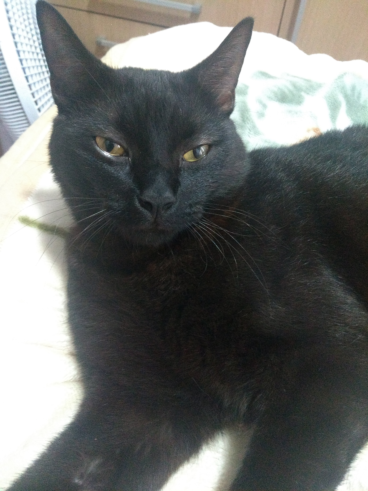
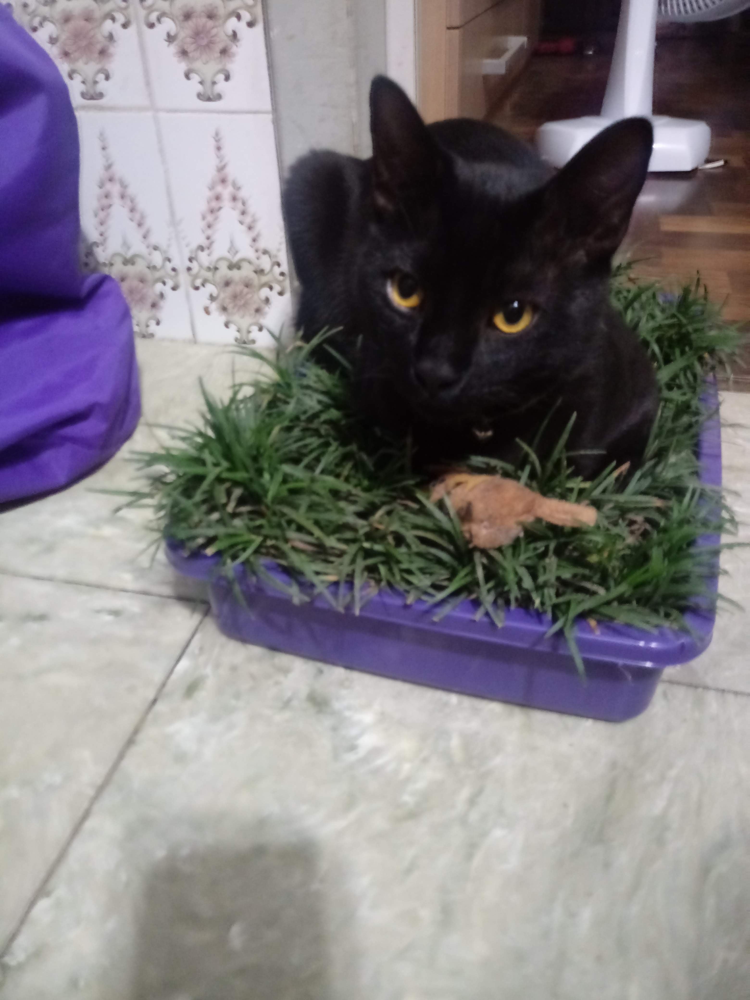

Mecz
Minha mãe nunca gostou de gatos...até a gente ter um.
Mecz, um nome polonês que se pronuncia 'Metcheco' e cujo significado é algo como "qualquer coisa" (algo que só descobri depois de um ano). Pense num gato fofo e antipático, era ele. Gostava de carinho por um tempo determinado e, depois, empurrava nossa mão pois já não queria mais.
A casa, inteira telada para proteger o moço que adorava uma grama infelizmente não foi o suficiente para impedir que ele fugisse no meio da noite e fosse atacado por cachorros na rua. Ele que não tinha maldade com cães, por ter sido criado com as nossas cadelas, não fugiu quando viu os cachorros e seu destino acabou sendo o pior de todos.
Era o melhor amigo da Juliete (que dupla!) e super apegado na minha mãe (e ela nele). Batia seus pratos de inox no suporte até ganhar comida quando estava com fome. Quando pequeno era elétrico, conforme foi crescendo adquirou o gênio forte e a antipatia da minha mãe.

- 
- 